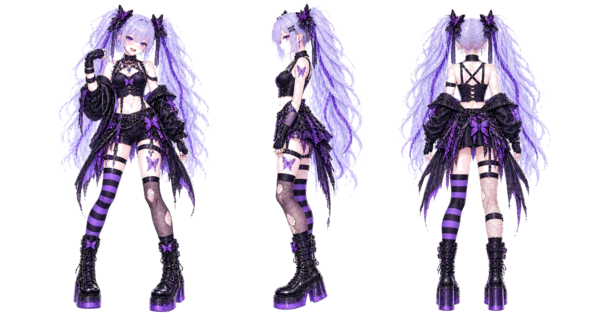

CHARACTER ART

LAVINIA / CHARACTER SHEET
- ROLE / INSTRUMENT
- ドラム
- MODEL
- DW Collector’s Series
- PERSONALITY
- 自由奔放で小悪魔的。明るく、いたずら好きで、退屈を嫌う。楽しそうに見えるがリズム感覚は高度で、変拍子や予想外の展開が得意。
- HEIGHT / BUILD
- 160cm。小柄で軽快。跳ねるような動きが似合う体格。
- COLOR
- パープル / ブラック / シルバー / 淡いラベンダー。紫蝶、混沌、リズム、自由、夜の鼓動。
- INSTRUMENT DESIGN
- DW Collector’s Series のドラムセット。バスドラムには紫蝶エンブレム。紫〜黒のドラムセットイラストが合う。
- PERSONA DESIGN
- 淡い銀紫〜薄いラベンダーのツインテール、紫の瞳。紫蝶タトゥーが見えるパンクゴスロリ。ミニ丈、ショートパンツ、左右非対称の脚、ボーダーソックス、網タイツ、厚底ブーツ。
- RELATION
- 楽器隊の空気をかき回すリズム担当。真面目なフレクシアをからかい、ノクティリスには見守られ、ルベリアとは勢いで噛み合う。退屈を壊してステージを動かす存在。